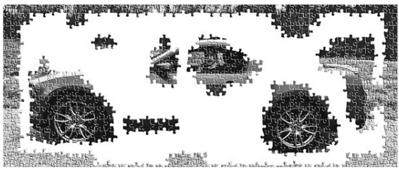

Думай як математик
Розділ 4. Порції інформації та ілюзія компетентності. Як стати «приборкачем рівнянь»

-
Збирайте вивчену інформацію в порції (фрагменти інформації, пов'язані між собою за змістом) як пазл,
таким чином
вона менше місця займає у пам'яті та її легше згадати:
- Вивчайте кожне окреме поняття та зв'язуйте вивчені поняття між собою в порції, як окремі шматочки
пазла
- Погляньте на загальну картину та зрозумійте, як ці пов'язані поняття співвідносяться з тими
поняттями, з якими вони поки що не пов'язані
- Накопичуйте контекст - тренуйте застосовувати цю порцію для вирішення різних типів завдань, щоб
розуміти, коли дана
порція застосовна, а коли ні
-
Ілюзія компетентності
- Доступність прочитаної інформації (відкритий підручник або Google) дає ілюзію, ніби матеріал
присутній і у вашій свідомості теж
- Бездумне підкреслення тексту при вивченні може дати вам ілюзію, ніби ви перемістили вивчений матерія
у свідомість
- "Різниця між розумінням нового матеріалу на лекції
та здатністю застосувати його при вирішенні задачі з фізики відповідає
різниці між простим студентом та повноцінним вченим чи інженером."
-
Як стати «приборкачем рівнянь»
- Практика та відтворення матеріалу з пам'яті давали студентам більше знань і на більш глибокому
рівні, ніж будь-які інші підходи
- Відмічайте в тексті лише важливе, намагайтеся не виділяти багато тексту: максимум одне речення на
абзац
- Вам можуть допомогти узагальнюючі ключові поняття слова або нотатки на полях
- Домашні завдання завжди вирішуйте самостійно, заглядайте у готове рішення або відповіді лише для
перевірки свого рішення
- Якщо вам потрібно засвоїти предмет так, щоб успішно складати іспити та використовувати вивчений
матеріал творчо, то інформація має надійно осісти у мозку
- Інтуїція, яка заснована на знаннях, допоможе вирішити найскладніші завдання, оскільки вони вимагають
відходу від вже відомих шляхів. Але будьте обережні та перевіряйте такі рішення, інтуїтивні осяяння не завжди вірні
- Змінюйте оточення, в якому ви тренуєтеся вирішувати завдання, так ви не розгубитеся в новій
обстановці
- Чергуйте способи вирішення завдань, що вивчаються, таким чином усі ваші знання будуть у бойовій
готовності
Думай как математик
Раздел 4. Порции информации и иллюзия компетентности. Как стать «укротителем уравнений»
-
Собирайте изученную информацию в порции (фрагменты информации, связанные между собой по смыслу) как
паззл, таким образом
она меньше места занимает в памяти и ее легче вспомнить:
- Изучайте каждое отдельное понятие и связыввайте изученные понятия между собой в порции, как
отдельные кусочки паззла
- Взгляните на общую картину и поймите, как эти связанные понятия соотносятся с теми понятиями, с
которыми они пока не связаны
- Накапливайте контекст - тренируйте применять эту порцию для решения различных типов задач, чтобы
понимать, когда данная
порция применима, а когда нет
-
Иллюзия компетентности
- Доступность прочитанной информации (открытый учебник или Google) дает иллюзию, будто материал
присутствует и в вашем сознании тоже
- Бездумное подчеркивание текста при изучении может дать вам иллюзию, будто вы переместили изучаемый
материа в сознание
- "Разница между пониманием нового материала на лекции
и способностью применить его при решении задачи по физике соответствует
разнице между простым студентом и полноценным ученым или инженером."
-
Как стать «укротителем уравнений»
- Практика и воспроизведение материала по памяти давали студентам больше знаний и на более глубоком
уровне, чем любые
другие подходы
- Отмечайте в тексте только важное, старайтесь не выделять много текста: максимум одно предложение на
абзац
- Вам могут помочь обобщающие ключевые понятия слова или заметки на полях
- Домашние задачи всегда решайте самостоятельно, заглядывайте в готовое решение или ответы только для
проверки своего решения
- Если вам нужно усвоить предмет так, чтобы успешно сдавать экзамены и использовать выученный материал
творчески, то
информация должна надежно осесть в мозгу
- Интуиция, основанная на знаниях, поможет решить самые сложные задачи, поскольку они требуют отхода
от уже известных
путей. Но будьте осторожны и проверяйте такие решения, интуитивные озарения не всегда верны
- Меняйте окружение в котором вы тренируетесь решать задачи, так вы не растеряетесь в новой обстановке
- Чередуйте изучаемые способы решения задач, таким образом все ваши знания будут в боевой готовности